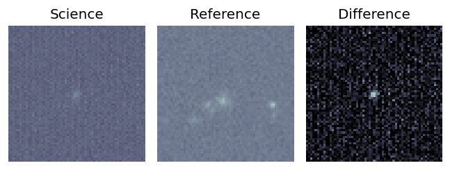

Candidate List 20260222Previous Day Next Day
Section 1: New Sources (age<1d) Section 2: Old (1-5d) sources observed last nightplaceholder
Section 1: New Afterglow/FBOT Cands Last Night (3)
1. ZTF26aahchhg (Afterglow?FBOT?) [Back to Top] [Share] [Trigger Swift] [Fritz] [Lasair]RA, Dec: 167.5571, 53.98591 11h10m13.70s, 53d59m9.26sGalactic (l, b): 150.6893, 57.34437 ext(g-r) = 0.01
TESS: Sectors [21 75]
SDSS (10 arcsec):Found SDSS phot-z: z=0.11; peak abs mag = -19.92
PS1: 0 sources in 3 arcsec
LegacySurvey: 1 sources in 3 arcsec Closest: d = 1.41 arcsec, 280.2 deg (east of north) photoz=0.88 (68% bounds 0.43, 1.27), type=REX peak abs mag = -25.04 (68% bounds -23.16, -26.02)

Extinction-corrected gr color:
From alerts: -0.16 +/- 0.19 mag
Consistent with synchrotron, g-r>0!
Rise Rate:
g: 0.23 mag/day
r: 0.22 mag/day
i: -99 mag/day
Fade Rate:
g: -99 mag/day
r: -99 mag/day
i: -99 mag/day
2. ZTF26aahcqjb (Afterglow?) [Back to Top] [Share] [Trigger Swift] [Fritz] [Lasair]RA, Dec: 299.58775, 69.08087 19h58m21.06s, 69d 4m51.15sGalactic (l, b): 101.65747, 19.53989 ext(g-r) = 0.252

TESS: Sectors [ 14 15 16 18 19 20 21 22 23 24 25 26 40 41 47 48 49 50
51 52 53 54 55 56 57 58 59 60 73 74 76 77 78 79 80 82
83 84 85 86 117 118 119 120 121]
PS1: 1 source in 3 arcsec Closest: d = 3.05 arcsec photoz=0.19+/-0.09 peak abs mag = -21.96
LegacySurvey: 0 sources in 3 arcsec

Extinction-corrected gr color:
From alerts: 0.08 +/- 0.02 mag
Consistent with synchrotron, g-r>0!
Rise Rate:
g: 4.42 mag/day
r: -99 mag/day
i: -99 mag/day
Fade Rate:
g: -99 mag/day
r: -99 mag/day
i: -99 mag/day
3. ZTF26aahcrmp (FBOT?) [Back to Top] [Share] [Trigger Swift] [Fritz] [Lasair]RA, Dec: 303.58864, 85.27539 20h14m21.27s, 85d16m31.40sGalactic (l, b): 118.04107, 25.37164 ext(g-r) = 0.168

TESS: Sectors [ 18 19 20 25 26 40 47 52 53 58 59 60 73 74 78 79 86 119]
PS1: 1 source in 3 arcsec Closest: d = 1.71 arcsec photoz=0.16+/-0.01 peak abs mag = -21.96
LegacySurvey: 0 sources in 3 arcsec

Extinction-corrected gr color:
From alerts: -0.17 +/- 0.03 mag
Rise Rate:
g: 37.92 mag/day
r: -99 mag/day
i: -99 mag/day
Fade Rate:
g: -99 mag/day
r: -99 mag/day
i: -99 mag/day
Section 2: Older Sources Observed Last Night (0)